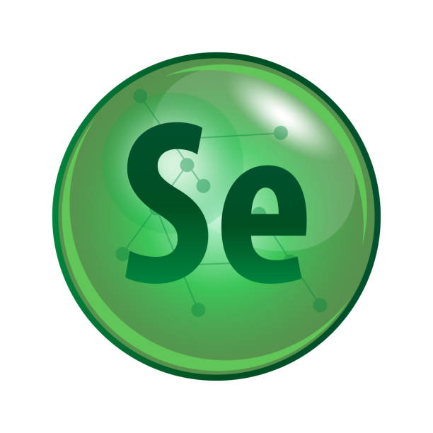
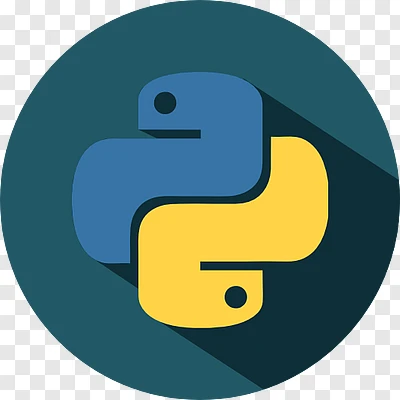
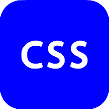

Summary
QA Engineer with 7 years of experience in manual and automated testing, primarily on FinTech projects and startups, where I built QA processes from the ground up. Passionate about improving user experience, creating clear test documentation, and collaborating closely with developers and product teams. Currently based in Calgary and retraining as a Full-Stack Developer through WIT, updating my skills and gaining hands-on experience with modern development practices.

Technologies




- Languages & Frameworks: Python, JavaScript, TypeScript, React, HTML5, CSS3, Bootstrap.
- Automation & Testing: Playwright, Selenium, BrowserStack (Cross-Browser).
- API Testing & Tools: Postman, Swagger, SoapUI, JSON, XML.
- Databases: PostgreSQL, MySQL, ClickHouse, Redis, Firebase.
- CI/CD & Cloud: GitHub Actions, Harness, AWS.
- Monitoring & Integration: Splunk, Grafana, Sentry, n8n, RabbitMQ.
- Project Management: Jira, Jira Align, Confluence, TestRail, Xray.
- Design & Collaboration: Figma, Miro, Notion, 1Password, Logto Cloud.
- Operating Systems: macOS, Windows.
Professional Experience
Sr. QA Automation Engineer
Rolling Insights | April 2026 – Present
Project: Rolling Insights Data Feeds – Sports data platform providing real-time stats (NFL, MLB).
- Developed and implemented a robust automation framework for high-traffic sports data APIs, ensuring the accuracy of real-time stats and schedule feeds.
- Engineered automated test suites for complex API endpoints utilizing Playwright to validate data integrity and filtering logic.
- Reduced manual regression efforts by automating Live Updates and data-feed validations, integrating tests into the CI/CD pipeline.
- Streamlined debugging processes by documenting subtle API filtering behaviors, leading to faster issue resolution.
Sr. QA/QC Engineer
Maildoso | San Francisco, USA | Oct 2024 – June 2025
Project: Maildoso – B2B cold-email platform helping teams automate mailbox setup and deliverability
- Reduced post-release bugs by 40% within 3 months by establishing end-to-end QA processes from scratch
- Designed and implemented an automation strategy, successfully integrating test suites into the CI pipeline
- Ensured 100% reliability of billing systems by performing rigorous E2E testing of Stripe integrations
- Optimized development flow and fostered a quality mindset across the engineering team
QA/QC Engineer & Release Manager
Godel Technologies | Wroclaw, Poland | June 2022 – Sept 2024
Project: Intelliflo – Global financial platform implemented for State Farm
- Reduced regression time by 30% and defects by 25% by developing automated test suites using Python and Selenium
- Maintained zero critical incidents and ensured timely delivery by supporting CI/CD pipelines and managing releases
- Optimized issue detection speed using Splunk and Grafana for real-time log monitoring
- Ensured a seamless mobile experience by conducting cross-platform testing via BrowserStack
QA Engineer
Andersen | Minsk, Belarus | Aug 2021 – May 2022
Project: VTB Bank – Leading retail and corporate banking services
- Standardized test documentation in TestRail, enhancing traceability and team communication efficiency
- Facilitated stakeholder understanding of technical features by delivering clear, actionable product demos
- Conducted functional, API, and regression testing ensuring robust software reliability
QA Engineer
Alfa Bank | Minsk, Belarus | Feb 2019 – Aug 2021
Project: Alfa Bank – Major commercial bank offering digital banking services
- Significantly improved app stability by identifying critical UI defects and providing user-focused feedback
- Executed rigorous UI and functional testing to ensure 100% alignment with business requirements
- Collaborated closely with developers to resolve defects and ensure a high-quality user experience
Education
- Full-Stack Web Development with Python, Java Script Programming, Making Changes Association, March 2026
- Master's degree in Economy Science, Belarusian State Economic University, May 2011
Certifications
- EPAM courses for QA, 2020
- CS50's Introduction to Computer Science, 2024
- Python Programming, RedRover.school, 2024